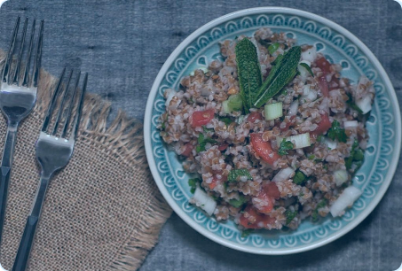
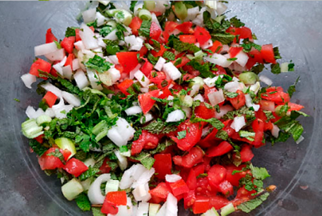

Recetas recomendadas:
137 resultados
Ensalada griega

La diferencia entre una buena ensalada griega y una mala se basa en dos puntos. Uno: la frescura y calidad de los ingredientes. Dos: la habilidad al corte del cocinero.
Necesitaremos tomates especialmente jugosos, tirando a maduros, así como un pepino sabroso y un pimiento en su punto. Si lo rematamos con un queso feta de calidad (no era mi caso) y unas olivas negras decentes (que tampoco era mi caso), seremos los reyes de la fiesta.
